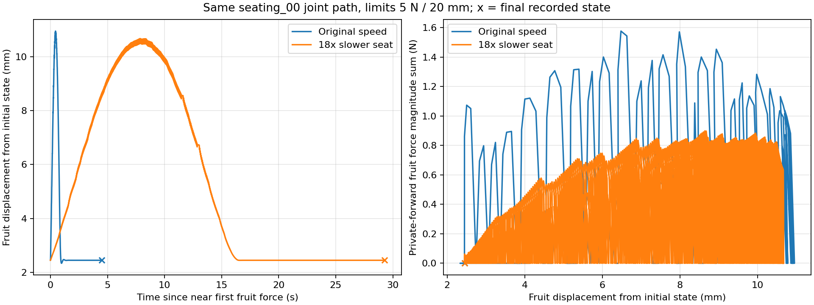

같은 저장 경로와 물리, 다른 중단값. 목표 과실/와이어 접촉만 허용. 비허용 접촉0.01N과 침투0.5mm 중단 기준 유지. 실물 안전/손상 기준 또는 수확 불가능 판정 아님. 보고서 · 원자료 요약
결과: 전체 동작 완료3 / 목표 힘 중단1 / 변위 중단5 / 비허용 가지 접촉 중단3. 접촉 기반 꼭지 안착·유지 확인0. 영상의 seated는 기하 후보이며 실제 걸림 성공이 아닙니다.
| 실험 | 힘 N / 변위 mm 제한 | 완료·중단 / 시간 | 과실 힘 L/P N | 최대 변위 mm | 비허용 힘 N | 안착 표본 / 유지 |
|---|---|---|---|---|---|---|
| original_00_f2_d5 | 2 / 5 | target_displacement_limit / 16.212s | 1.309 / 1.308 | 5.096 | 0.000 | 0 / False |
| original_00_f1_d10 | 1 / 10 | target_force_limit / 16.112s | 0.863 / 1.074 | 2.968 | 0.000 | 0 / False |
| original_00_f2_d10 | 2 / 10 | target_displacement_limit / 16.433s | 1.577 / 1.576 | 10.060 | 0.000 | 0 / False |
| slow18_00_f2_d5 | 2 / 5 | target_displacement_limit / 28.300s | 0.604 / 0.604 | 5.015 | 0.000 | 0 / False |
| slow18_00_f1_d10 | 1 / 10 | target_displacement_limit / 32.462s | 0.899 / 0.899 | 10.002 | 0.000 | 0 / False |
| slow18_00_f2_d10 | 2 / 10 | target_displacement_limit / 32.462s | 0.899 / 0.899 | 10.002 | 0.000 | 0 / False |
| original_00_f5_d20 | 5 / 20 | completed / 20.600s | 1.577 / 1.576 | 10.951 | 0.000 | 51 / False |
| original_03_f5_d20 | 5 / 20 | forbidden_force / 16.767s | 1.505 / 1.266 | 10.025 | 0.638 | 0 / False |
| original_04_f5_d20 | 5 / 20 | completed / 20.667s | 1.529 / 1.585 | 10.628 | 0.000 | 750 / False |
| original_05_f5_d20 | 5 / 20 | forbidden_force / 16.596s | 1.539 / 1.483 | 11.141 | 1.017 | 0 / False |
| original_06_f5_d20 | 5 / 20 | forbidden_force / 16.662s | 1.557 / 1.507 | 11.063 | 0.978 | 0 / False |
| slow18_00_f5_d20 | 5 / 20 | completed / 55.733s | 0.899 / 0.899 | 10.673 | 0.000 | 0 / False |
L/P는 live 이전 solve / private-forward 현재 상태의 접촉별 힘 크기 합이다. 양쪽을 합산하지 않는다. 영상 왼쪽은 명목 명령, 오른쪽은 실제 저장 상태다. 제목에 실제 중단 원인과 시점 표시.
